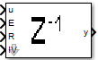

Inputs:
u: numeric, logic
E: logic
R: logic
IV: numeric, logic
Outputs:
y: numericl, logic
States:
x: numeric, logic
Init-Code:
x = 0;
Pseudo-code:
if (R) {
y = IV;
x = IV;
}
else if (E) {
y = x;
x = u;
}
else {
y = x;
}